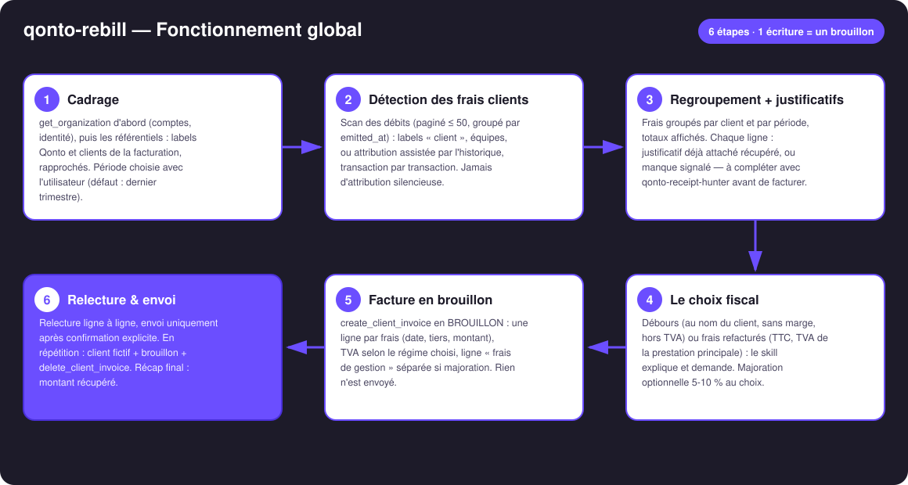
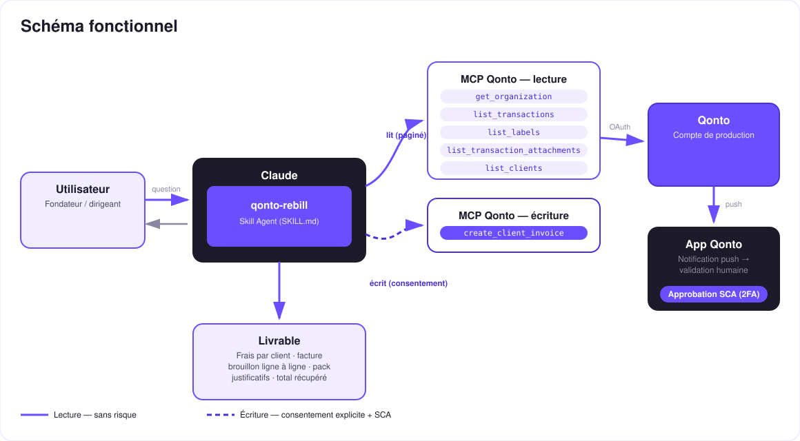

Les frais avancés pour tes clients, littéralement récupérés — la refacturation ligne à ligne, justificatifs inventoriés.
Freelances et agences avancent des frais pour leurs clients — plugins, banques d'images, hébergement, déplacements, repas de mission — et oublient d'en refacturer la moitié. Le skill va rechercher cet argent :
Labels Qonto « client », équipes, ou attribution assistée par l'historique — transaction par transaction, jamais en silence.
Frais groupés par client et par période, avec l'inventaire des justificatifs déjà attachés — les manques sont signalés.
Débours (hors TVA) vs frais refacturés (TTC) : le skill compare et demande ton régime — il ne décide jamais seul.
Une ligne par frais, majoration 5-10 % optionnelle — envoi uniquement après ta confirmation explicite.
| Prérequis | Détail | Obligatoire |
|---|---|---|
| Compte Qonto production | Le skill s'adapte à toute organisation — get_organization d'abord, zéro donnée en dur | ✅ |
| Pays | Mécanique universelle (détecter → regrouper → facturer). Le régime débours est français (art. 267 II-2° CGI) : hors France, TVA locale renvoyée à l'expert-comptable | ℹ️ détecté |
| MCP Qonto connecté | Connecteur officiel (claude.ai / Claude Desktop), login OAuth | ✅ |
| Labels « client » | Labels Qonto nommés comme les clients (ou équipes par mission). Sans labels : attribution interactive, transaction par transaction | ⭕ recommandé |
| Clients dans la facturation | list_clients — la facture a besoin d'un client existant ; sinon le skill explique la création | ⭕ |
| Justificatifs attachés | Inventoriés automatiquement ; pour les manques : qonto-receipt-hunter avant de refacturer | ⭕ |

emitted_at, pas settled_at (règlement 1-2 jours plus tard)qonto-receipt-hunter avant l'envoiget_organization toujours en premier (bank_account_id exigé par list_transactions)
Une seule écriture, et c'est un brouillon : la lecture est sans risque ; l'écriture (create_client_invoice) ne produit qu'un brouillon dans Qonto. L'envoi au client exige la confirmation explicite dans la conversation. Les factures MCP étant réelles, les répétitions se font sur client fictif puis delete_client_invoice.
| Critère | Débours (art. 267 II-2° CGI) | Frais refacturés (classique) |
|---|---|---|
| Principe | Dépense engagée au nom et pour le compte du client (mandat) | Dépense engagée en son nom propre, refacturée comme élément du prix |
| Marge | Interdite — remboursement à l'euro l'euro | Autorisée (frais de gestion 5-10 %…) |
| TVA | Hors champ : pas de TVA sur la ligne, TVA de l'achat non déductible | TTC, au taux de la prestation principale (souvent 20 %) — même si l'achat était à 10 % ou sans TVA |
| Justificatif | Facture d'origine au nom du client, à lui remettre | Facture d'origine au nom du prestataire, conservée |
| Comptabilité | Compte de tiers (pas du chiffre d'affaires) | Produit (chiffre d'affaires) |
| Pays | Régime français | Mécanique universelle ; hors France → expert-comptable local |
Le skill explique et demande — il ne décide jamais seul (ligne à ligne si les régimes sont mixtes), et chaque rapport recommande la validation de l'expert-comptable.
| Sortie | Format | Quand |
|---|---|---|
| Réponse dans la conversation | Tableaux markdown : frais par client (justificatif ✅/⚠️), facture ligne à ligne, total récupéré | Toujours — c'est la base |
| Brouillon de facture Qonto | create_client_invoice en brouillon, visible dans Facturation | Après l'accord sur le régime ; envoi après confirmation explicite |
| Pack justificatifs | Liens de téléchargement (get_attachment, durée limitée) à joindre à l'envoi | À chaque facture préparée |
| Récap HTML | Cartes par client, jauge justificatifs, montants récupérés | Si l'hôte affiche les fichiers ; repli sur les tableaux sinon |
La démo ≤ 3 min jointe à la PR suit le storyboard : le problème (les frais avancés qu'on oublie) → détection par labels → le choix fiscal expliqué → la facture brouillon ligne à ligne, justificatifs inventoriés → envoi confirmé et récap. Le script détaillé de tournage est conservé en interne (hors dépôt).
| Idée | Effort | Note |
|---|---|---|
| Apprentissage des tiers « refacturables » par client | Moyen | Les attributions acceptées pré-remplissent le trimestre suivant |
Devis d'accord préalable (create_quote) pour les gros frais | Faible | Le client valide la dépense AVANT l'avance |
| Rituel mensuel/trimestriel planifié | Faible | « Frais à refacturer ce mois-ci ? » en automatique |
Chaînage qonto-receipt-hunter → qonto-rebill → qonto-invoice-chaser | Faible | Justificatifs complets → facture → relance de paiement |
| Frais en devises | Moyen | Conversion au taux de la transaction, mention sur la ligne |
delete_client_invoice